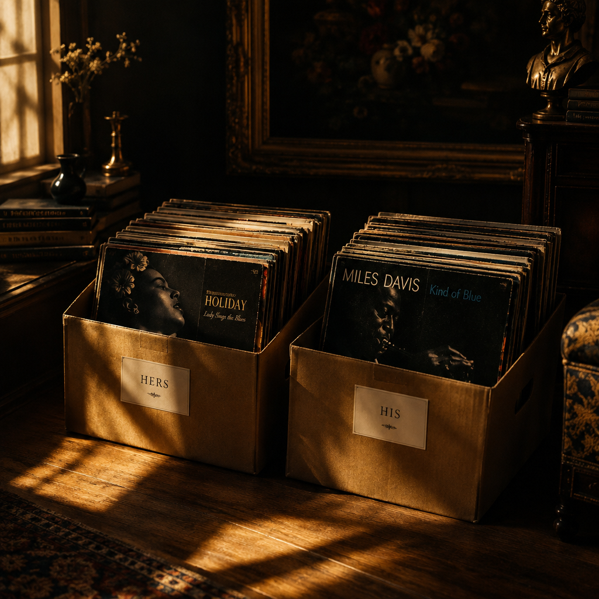

Portfolio
Every commission is photographed the way the great wedding studios photograph weddings: reverently, editorially, and in the best hour of light. The subject is simply different. Names are used with permission, which our clients grant with surprising enthusiasm.




Client Words
“They photographed the signing the way someone once photographed our vows. Honestly, better. The focus was sharper this time.”Marcus T., full-day coverage
“My attorney has never looked so dignified. She ordered prints for her office.”Priya S., Decree in Golden Hour
“We hired them together, which was the last thing we agreed on. No regrets from either address.”D. & D., names abbreviated by settlement
Two commissions per week. Spring signing dates go first.
Packages & Booking